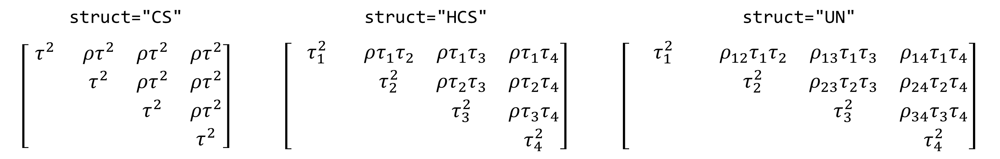
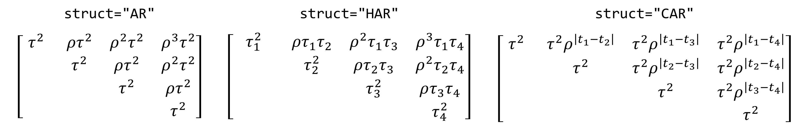

rma.mv.RdFunction to fit meta-analytic multivariate/multilevel fixed- and random/mixed-effects models with or without moderators via linear (mixed-effects) models. See below and the documentation of the metafor-package for more details on these models.
rma.mv(yi, V, W, mods, random, struct="CS", intercept=TRUE, data, slab, subset, method="REML", test="z", dfs="residual", level=95, digits, btt, R, Rscale="cor", sigma2, tau2, rho, gamma2, phi, sparse=FALSE, verbose=FALSE, control, ...)
| yi | vector of length \(k\) with the observed effect sizes or outcomes. See ‘Details’. |
|---|---|
| V | vector of length \(k\) with the corresponding sampling variances or a \(k \times k\) variance-covariance matrix of the sampling errors. See ‘Details’. |
| W | optional argument to specify a vector of length \(k\) with user-defined weights or a \(k \times k\) user-defined weight matrix. See ‘Details’. |
| mods | optional argument to include one or more moderators in the model. A single moderator can be given as a vector of length \(k\) specifying the values of the moderator. Multiple moderators are specified by giving a matrix with \(k\) rows and as many columns as there are moderator variables. Alternatively, a model |
| random | either a single one-sided formula or list of one-sided formulas to specify the random-effects structure of the model. See ‘Details’. |
| struct | character string to specify the variance structure of an |
| intercept | logical to specify whether an intercept should be added to the model (the default is |
| data | optional data frame containing the data supplied to the function. |
| slab | optional vector with labels for the \(k\) outcomes/studies. |
| subset | optional (logical or numeric) vector to specify the subset of studies (or more precisely, rows of the dataset) that should be used for the analysis. |
| method | character string to specify whether the model should be fitted via maximum-likelihood ( |
| test | character string to specify how test statistics and confidence intervals for the fixed effects should be computed. By default ( |
| dfs | character string to specify how the (denominator) degrees of freedom should be calculated when |
| level | numeric value between 0 and 100 to specify the confidence interval level (the default is 95). |
| digits | integer to specify the number of decimal places to which the printed results should be rounded. If unspecified, the default is 4. |
| btt | optional vector of indices to specify which coefficients to include in the omnibus test of moderators. Can also be a string to grep for. See ‘Details’. |
| R | an optional named list of known correlation matrices corresponding to (some of) the components specified via the |
| Rscale | character string, integer, or logical to specify how matrices specified via the |
| sigma2 | optional numeric vector (of the same length as the number of random intercept components specified via the |
| tau2 | optional numeric value (for |
| rho | optional numeric value (for |
| gamma2 | as |
| phi | as |
| sparse | logical to specify whether the function should use sparse matrix objects to the extent possible (can speed up model fitting substantially for certain models). See ‘Note’. |
| verbose | logical to specify whether output should be generated on the progress of the model fitting (the default is |
| control | optional list of control values for the estimation algorithms. If unspecified, default values are defined inside the function. See ‘Note’. |
| ... | additional arguments. |
Specifying the Data
The function can be used in conjunction with any of the usual effect size or outcome measures used in meta-analyses (e.g., log risk ratios, log odds ratios, risk differences, mean differences, standardized mean differences, log transformed ratios of means, raw correlation coefficients, correlation coefficients transformed with Fisher's r-to-z transformation, and so on). Simply specify the observed effect sizes or outcomes via the yi argument and the corresponding sampling variances via the V argument. In case the sampling errors are correlated, then one can specify the entire variance-covariance matrix of the sampling errors via the V argument.
The escalc function can be used to compute a wide variety of effect size or outcome measures (and the corresponding sampling variances) based on summary statistics. Equations for computing the covariance between the sampling errors for a variety of different effect size or outcome measures can be found, for example, in Gleser and Olkin (2009). For raw and Fisher r-to-z transformed correlations, one can find suitable equations, for example, in Steiger (1980). The latter are implemented in the rcalc function.
Specifying Fixed Effects
With rma.mv(yi, V), a fixed-effects model is fitted to the data (note: arguments struct, sigma2, tau2, rho, gamma2, phi, R, and Rscale are not relevant then and are ignored). The model is then simply given by \(y \sim N(\theta, V)\), where \(y\) is a (column) vector with the observed outcomes, \(\theta\) is the (average) true outcome, and \(V\) is the variance-covariance matrix of the sampling errors (if a vector of sampling variances is provided via the V argument, then \(V\) is assumed to be diagonal).
One or more moderators can be included in the model via the mods argument. A single moderator can be given as a (row or column) vector of length \(k\) specifying the values of the moderator. Multiple moderators are specified by giving an appropriate model matrix (i.e., \(X\)) with \(k\) rows and as many columns as there are moderator variables (e.g., mods = cbind(mod1, mod2, mod3), where mod1, mod2, and mod3 correspond to the names of the variables for the three moderator variables). The intercept is added to the model matrix by default unless intercept=FALSE.
Alternatively, one can use standard formula syntax to specify the model. In this case, the mods argument should be set equal to a one-sided formula of the form mods = ~ model (e.g., mods = ~ mod1 + mod2 + mod3). Interactions, polynomial terms, and factors can be easily added to the model in this manner. When specifying a model formula via the mods argument, the intercept argument is ignored. Instead, the inclusion/exclusion of the intercept is controlled by the specified formula (e.g., mods = ~ mod1 + mod2 + mod3 - 1 would lead to the removal of the intercept). One can also directly specify moderators via the yi argument (e.g., rma.mv(yi ~ mod1 + mod2 + mod3, V)). In that case, the mods argument is ignored and the inclusion/exclusion of the intercept again is controlled by the specified formula.
With moderators included, the model is then given by \(y \sim N(X \beta, V)\), where \(X\) denotes the model matrix containing the moderator values (and possibly the intercept) and \(\beta\) is a column vector containing the corresponding model coefficients. The model coefficients (i.e., \(\beta\)) are then estimated with \(b = (X'WX')^{-1} X'Wy\), where \(W = V^{-1}\) is the weight matrix (without moderators, \(X\) is just a column vector of 1's). With the W argument, one can also specify user-defined weights (or a weight matrix).
Specifying Random Effects
One can fit random/mixed-effects models to the data by specifying the desired random effects structure via the random argument. The random argument is either a single one-sided formula or a list of one-sided formulas. One formula type that can be specified via this argument is of the form random = ~ 1 | id. Such a formula adds a random effect corresponding to the grouping variable/factor id to the model. Outcomes with the same value/level of the id variable/factor receive the same value of the random effect, while outcomes with different values/levels of the id variable/factor are assumed to be independent. The variance component corresponding to such a formula is denoted by \(\sigma^2\). An arbitrary number of such formulas can be specified as a list of formulas (e.g., random = list(~ 1 | id1, ~ 1 | id2)), with variance components \(\sigma^2_1\), \(\sigma^2_2\), and so on. Nested random effects of this form can also be added using random = ~ 1 | id1/id2, which adds a random effect corresponding to the grouping variable/factor id1 and a random effect corresponding to id2 within id1 to the model. This can be extended to models with even more levels of nesting (e.g., random = ~ 1 | id1/id2/id2).
Random effects of this form are useful to model clustering (and hence non-independence) induced by a multilevel structure in the data (e.g., outcomes derived from the same paper, lab, research group, or species may be more similar to each other than outcomes derived from different papers, labs, research groups, or species). See, for example, Konstantopoulos (2011) and Nakagawa and Santos (2012) for more details.
See dat.konstantopoulos2011, dat.bornmann2007, dat.obrien2003, and dat.crede2010 for examples of multilevel meta-analyses.
In addition or alternatively to specifying one or multiple ~ 1 | id terms, the random argument can also contain a formula of the form ~ inner | outer. Outcomes with the same value/level of the outer grouping variable/factor share correlated random effects corresponding to the levels of the inner grouping variable/factor, while outcomes with different values/levels of the outer grouping variable/factor are assumed to be independent (note that the inner grouping variable must either be a factor or a character variable). The struct argument is used to specify the variance structure corresponding to the inner variable/factor. With struct="CS", a compound symmetric structure is assumed (i.e., a single variance component \(\tau^2\) corresponding to all values/levels of the inner variable/factor and a single correlation coefficient \(\rho\) for the correlation between the different values/levels). With struct="HCS", a heteroscedastic compound symmetric structure is assumed (with variance components \(\tau^2_1\), \(\tau^2_2\), and so on, corresponding to the values/levels of the inner variable/factor and a single correlation coefficient \(\rho\) for the correlation between the different values/levels). With struct="UN", an unstructured variance-covariance matrix is assumed (with variance components \(\tau^2_1\), \(\tau^2_2\), and so on, corresponding to the values/levels of the inner variable/factor and correlation coefficients \(\rho_{12}\), \(\rho_{13}\), \(\rho_{23}\), and so on, for the various combinations of the values/levels of the inner variable/factor).

Structures struct="ID" and struct="DIAG" are just like struct="CS" and struct="HCS", respectively, except that \(\rho\) is automatically set to 0, so that we either get a scaled identity matrix or a diagonal matrix.
With the outer factor corresponding to a study identification variable and the inner factor corresponding to a variable indicating the treatment type or study arm, such a random effect could be used to estimate how strongly different treatment effects or outcomes within the same study are correlated and/or whether the amount of heterogeneity differs across different treatment types/arms. Network meta-analyses (also known as mixed treatment comparisons) will also typically require such a random effect (e.g., Salanti et al., 2008). The meta-analytic bivariate model (e.g., van Houwelingen, Arends, & Stijnen, 2002) can also be fitted in this manner (see the examples below). The inner factor could also correspond to a variable indicating different types of outcomes measured within the same study, which allows for fitting multivariate models with multiple correlated effects/outcomes per study (e.g., Berkey et al., 1998; Kalaian & Raudenbush, 1996).
See dat.berkey1998, dat.assink2016, dat.kalaian1996, dat.dagostino1998, and dat.craft2003 for examples of multivariate meta-analyses with multiple outcomes. See dat.kearon1998 for an example using a bivariate model to analyze sensitivity and specificity. See dat.hasselblad1998, dat.pagliaro1992, dat.lopez2019, and dat.senn2013 for examples of network meta-analyses.
For meta-analyses of studies reporting outcomes at multiple time points, it may also be reasonable to assume that the true effects/outcomes are correlated over time according to an autoregressive structure (Ishak et al., 2007; Trikalinos & Olkin, 2012). For this purpose, one can also choose struct="AR", corresponding to a structure with a single variance component \(\tau^2\) and AR(1) autocorrelation among the values of the random effect. The values of the inner variable (which does not have to be a factor here) should then reflect the various time points, with increasing values reflecting later time points. This structure assumes equally spaced time points, so the actual values of the inner variable are not relevant, only their ordering. One can also use struct="HAR", which allows for fitting a heteroscedastic AR(1) structure (with variance components \(\tau^2_1\), \(\tau^2_2\), and so on). Finally, when time points are not evenly spaced, one might consider using struct="CAR" for a continuous-time autoregressive structure.

See dat.fine1993 and dat.ishak2007 for examples involving such structures.
For outcomes that have a known spatial configuration, various spatial correlation structures are also available. For these structures, the formula is of the form random = ~ var1 + var2 + ... | outer, where var1, var2, and so on are variables to indicate the spatial coordinates (e.g., longitude and latitude) based on which distances (by default Euclidean) will be computed. Let \(d\) denote the distance between two points that share the same level of the outer variable (if all true effects/outcomes are allowed to be spatially correlated, simply set outer to a variable that is a constant). Then the correlation between the true effects/outcomes corresponding to these two points is a function of \(d\) and the parameter \(\rho\). The following table shows the types of spatial correlation structures that can be specified and the equations for the correlation. The covariance between the true effects/outcomes is then the correlation times \(\tau^2\).
| structure | struct | correlation | ||
| exponential | "SPEXP" | \(\exp(-d/\rho)\) | ||
| Gaussian | "SPGAU" | \(\exp(-d^2/\rho^2)\) | ||
| linear | "SPLIN" | \((1 - d/\rho) I(d < \rho)\) | ||
| rational quadratic | "SPRAT" | \(1 - (d/\rho)^2 / (1 + (d/\rho)^2)\) | ||
| spherical | "SPSPH" | \((1 - 1.5(d/\rho) + 0.5(d/\rho)^3) I(d < \rho)\) |
Note that \(I(d < \rho)\) is equal to \(1\) if \(d < \rho\) and \(0\) otherwise. The parameterization of the various structures is based on Pinheiro and Bates (2000). Instead of Euclidean distances, one can also use other distance measures by setting (the undocumented) argument dist to either "maximum" for the maximum distance between two points (supremum norm), to "manhattan" for the absolute distance between the coordinate vectors (L1 norm), or to "gcd" for the great-circle distance (WGS84 ellipsoid method). In the latter case, only two variables, namely the longitude and latitude (in decimal degrees, with minus signs for West and South), must be specified.
If a distance matrix has already been computed, one can also pass this matrix as a list element to the dist argument. In this case, one should use a formula of the form random = ~ id | outer, where id are location identifiers, with corresponding row/column names in the distance matrix specified via the dist argument.
See dat.maire2019 for an example of a meta-analysis with a spatial correlation structure.
The random argument can also contain a second formula of the form ~ inner | outer (but no more!). A second formula of this form works exactly described as above, but its variance components are denoted by \(\gamma^2\) and its correlation components by \(\phi\). The struct argument should then be of length 2 to specify the variance-covariance structure for the first and second component, respectively.
When the random argument contains a formula of the form ~ 1 | id, one can use the (optional) argument R to specify a corresponding known correlation matrix for the random effect (i.e., R = list(id = Cor), where Cor is the correlation matrix). In that case, outcomes with the same value/level of the id variable/factor receive the same value for the random effect, while outcomes with different values/levels of the id variable/factor receive values that are correlated as specified in the corresponding correlation matrix given via the R argument. The column/row names of the correlation matrix given via the R argument must therefore contain all of the values/levels of the id variable/factor. When the random argument contains multiple formulas of the form ~ 1 | id, one can specify known correlation matrices for none, some, or all of those terms (e.g., with random = list(~ 1 | id1, ~ 1 | id2), one could specify R = list(id1 = Cor1) or R = list(id1 = Cor1, id2 = Cor2), where Cor1 and Cor2 are the correlation matrices corresponding to the grouping variables/factors id1 and id2, respectively).
Such a random effect with a known (or at least approximately known) correlation structure is useful in a variety of contexts. For example, such a component can be used to account for the correlations induced by the shared phylogenetic history among organisms (e.g., plants, fungi, animals). In that case, ~ 1 | species is used to specify the species and argument R is used to specify the phylogenetic correlation matrix of the species studied in the meta-analysis. The corresponding variance component then indicates how much variance/heterogeneity is attributable to the specified phylogeny. See Nakagawa and Santos (2012) for more details. As another example, in a genetic meta-analysis studying disease association for several single nucleotide polymorphisms (SNPs), linkage disequilibrium (LD) among the SNPs can induce an approximately known degree of correlation among the effects/outcomes. In that case, ~ 1 | snp could be used to specify the SNPs and R the corresponding LD correlation matrix for the SNPs included in the meta-analysis.
The Rscale argument controls how matrices specified via the R argument are scaled. With Rscale="none" (or Rscale=0 or Rscale=FALSE), no scaling is used. With Rscale="cor" (or Rscale=1 or Rscale=TRUE), the cov2cor function is used to ensure that the matrices are correlation matrices (assuming they were covariance matrices to begin with). With Rscale="cor0" (or Rscale=2), first cov2cor is used and then the elements of each correlation matrix are scaled with \((R - \min(R)) / (1 - \min(R))\) (this ensures that a correlation of zero in a phylogenetic correlation matrix corresponds to the split at the root node of the tree comprising the species that are actually analyzed). Finally, Rscale="cov0" (or Rscale=3) only rescales with \((R - \min(R))\) (which ensures that a phylogenetic covariance matrix is rooted at the lowest split).
See dat.moura2021 and dat.lim2014 for examples of meta-analyses with phylogenetic correlation structures.
Together with the variance-covariance matrix of the sampling errors (i.e., \(V\)), the specified random effects structure of the model implies a particular marginal variance-covariance matrix of the observed effect sizes or outcomes. Once estimates of the variance components (i.e., \(\sigma^2\), \(\tau^2\), \(\rho\), \(\gamma^2\), and/or \(\phi\), values) have been obtained (either using maximum likelihood or restricted maximum likelihood estimation), the estimated marginal variance-covariance matrix can be constructed (denoted by \(M\)). The model coefficients (i.e., \(\beta\)) are then estimated with \(b = (X'WX')^{-1} X'Wy\), where \(W = M^{-1}\) is the weight matrix. With the W argument, one can again specify user-defined weights (or a weight matrix).
Fixing Variance Components and/or Correlations
Arguments sigma2, tau2, rho, gamma2, and phi can be used to fix particular variance components and/or correlations at a given value. This is useful for sensitivity analyses (e.g., for plotting the regular/restricted log-likelihood as a function of a particular variance component or correlation) or for imposing a desired variance-covariance structure on the data.
For example, if random = list(~ 1 | id1, ~ 1 | id2), then sigma2 must be of length 2 (corresponding to \(\sigma^2_1\) and \(\sigma^2_2\)) and a fixed value can be assigned to either or both variance components. Setting a particular component to NA means that the component will be estimated by the function (e.g., sigma2=c(0,NA) would fix \(\sigma^2_1\) to 0 and estimate \(\sigma^2_2\)).
Argument tau2 is only relevant when the random argument contains an ~ inner | outer formula. In that case, if the tau2 argument is used, it must be either of length 1 (for "CS", "ID", "AR", "CAR", or one of the spatial correlation structures) or of the same length as the number of levels of the inner factor (for "HCS", "DIAG", "UN", or "HAR"). A numeric value in the tau2 argument then fixes the corresponding variance component to that value, while NA means that the component will be estimated. Similarly, if argument rho is used, it must be either of length 1 (for "CS", "HCS", "AR", "HAR", or one of the spatial correlation structures) or of length \(lvls(lvls-1)/2\) (for "UN"), where \(lvls\) denotes the number of levels of the inner factor. Again, a numeric value fixes the corresponding correlation, while NA means that the correlation will be estimated. For example, with struct="CS" and rho=0, the variance-covariance matrix of the inner factor will be diagonal with \(\tau^2\) along the diagonal. For struct="UN", the values specified under rho should be given in column-wise order (e.g., for an inner grouping variable/factor with four levels, the order would be \(\rho_{12}\), \(\rho_{13}\), \(\rho_{23}\), \(\rho_{14}\), \(\rho_{24}\), \(\rho_{34}\).
Similarly, arguments gamma2 and phi are only relevant when the random argument contains a second ~ inner | outer formula. The arguments then work exactly as described above.
Omnibus Test of Moderators
For models including moderators, an omnibus test of all model coefficients is conducted that excludes the intercept (the first coefficient) if it is included in the model. If no intercept is included in the model, then the omnibus test includes all of the coefficients in the model including the first. Alternatively, one can manually specify the indices of the coefficients to test via the btt argument. For example, with btt=c(3,4), only the third and fourth coefficient from the model would be included in the test (if an intercept is included in the model, then it corresponds to the first coefficient in the model). Instead of specifying the coefficient numbers, one can specify a string for btt. In that case, grep will be used to search for all coefficient names that match the string. The omnibus test is called the \(Q_M\)-test and follows, under the assumptions of the model, a chi-square distribution with \(m\) degrees of freedom (with \(m\) denoting the number of coefficients tested) under the null hypothesis (that the true value of all coefficients tested is equal to 0).
Categorical Moderators
Categorical moderator variables can be included in the model via the mods argument in the same way that appropriately (dummy) coded categorical independent variables can be included in linear models. One can either do the dummy coding manually or use a model formula together with the factor function to let R handle the coding automatically (note that string/character variables in a model formula are automatically converted to factors).
Tests and Confidence Intervals
By default, tests of individual coefficients in the model (and the corresponding confidence intervals) are based on a standard normal distribution, while the omnibus test is based on a chi-square distribution (see above). As an alternative, one can set test="t", in which case tests of individual coefficients and confidence intervals are based on a t-distribution with \(k-p\) degrees of freedom, while the omnibus test statistic then uses an F-distribution with \(m\) and \(k-p\) degrees of freedom (with \(k\) denoting the total number of estimates included in the analysis and \(p\) the total number of model coefficients including the intercept if it is present). Note that test="t" is not the same as test="knha" in rma.uni, as no adjustment to the standard errors of the estimated coefficients is made.
The method for calculating the (denominator) degrees of freedom described above (which corresponds to dfs="residual") is quite simplistic and may lead to tests with inflated Type I error rates and confidence intervals that are too narrow on average. As an alternative, one can set dfs="contain", in which case the degrees of freedom for the test of a particular model coefficient, \(b_j\), are determined by checking whether \(x_j\), the corresponding column of the model matrix \(X\), varies at the level corresponding to a particular random effect in the model. If such a random effect can be found, then the degrees of freedom are set to \(l-p\), where \(l\) denotes the unique number of values/levels that the random effect can take on (i.e., for an ~ 1 | id term, the unique number of values/levels of the id variable and for an ~ inner | outer term, the unique number of values/levels of the outer variable). If no such random effect can be found, then \(k-p\) is used as the degrees of freedom. For the omnibus F-test, the minimum of the degrees of freedom of all coefficients involved in the test is used as the denominator degrees of freedom. This approach for calculating the degrees of freedom should often lead to tests with better control of the Type I error rate and confidence intervals with closer to nominal coverage rates.
One can also set dfs to a numeric vector with the desired values for the degrees of freedom for testing the model coefficients (e.g., if some other method for determining the degrees of freedom was used).
Test for (Residual) Heterogeneity
A test for (residual) heterogeneity is automatically carried out by the function. Without moderators in the model, this test is the generalized/weighted least squares extension of Cochran's \(Q\)-test, which tests whether the variability in the observed effect sizes or outcomes is larger than one would expect based on sampling variability (and the given covariances among the sampling errors) alone. A significant test suggests that the true effects/outcomes are heterogeneous. When moderators are included in the model, this is the \(Q_E\)-test for residual heterogeneity, which tests whether the variability in the observed effect sizes or outcomes that is not accounted for by the moderators included in the model is larger than one would expect based on sampling variability (and the given covariances among the sampling errors) alone.
An object of class c("rma.mv","rma"). The object is a list containing the following components:
estimated coefficients of the model.
standard errors of the coefficients.
test statistics of the coefficients.
corresponding p-values.
lower bound of the confidence intervals for the coefficients.
upper bound of the confidence intervals for the coefficients.
variance-covariance matrix of the estimated coefficients.
estimated \(\sigma^2\) value(s).
estimated \(\tau^2\) value(s).
estimated \(\rho\) value(s).
estimated \(\gamma^2\) value(s).
estimated \(\phi\) value(s).
number of observed effect sizes or outcomes included in the analysis.
number of coefficients in the model (including the intercept).
number of coefficients included in the omnibus test of moderators.
test statistic of the test for (residual) heterogeneity.
corresponding p-value.
test statistic of the omnibus test of moderators.
corresponding p-value.
logical that indicates whether the model is an intercept-only model.
the vector of outcomes, the corresponding variance-covariance matrix of the sampling errors, and the model matrix.
the estimated marginal variance-covariance matrix of the observed effect sizes or outcomes.
a list with the log-likelihood, deviance, AIC, BIC, and AICc values.
some additional elements/values.
The results of the fitted model are formatted and printed with the print.rma.mv function. If fit statistics should also be given, use summary.rma (or use the fitstats.rma function to extract them). Full versus reduced model comparisons in terms of fit statistics and likelihoods can be obtained with anova.rma. Wald-type tests for sets of model coefficients or linear combinations thereof can be obtained with the same function. Tests and confidence intervals based on (cluster) robust methods can be obtained with robust.rma.mv.
Predicted/fitted values can be obtained with predict.rma and fitted.rma. For best linear unbiased predictions, see ranef.rma.mv.
The residuals.rma, rstandard.rma.mv, and rstudent.rma.mv functions extract raw and standardized residuals. See influence.rma.mv for additional case diagnostics (e.g., to determine influential studies). For models with moderators, variance inflation factors can be obtained with vif.rma.
Confidence intervals for any variance/correlation parameters in the model can be obtained with confint.rma.mv.
For random/mixed-effects models, the profile.rma.mv function can be used to obtain a plot of the (restricted) log-likelihood as a function of a specific variance component or correlation parameter of the model. For models with moderators, regplot.rma draws scatter plots / bubble plots, showing the (marginal) relationship between the observed outcomes and a selected moderator from the model.
Other extractor functions include coef.rma, vcov.rma, logLik.rma, deviance.rma, AIC.rma, BIC.rma, hatvalues.rma.mv, and weights.rma.mv.
Argument V also accepts a list of variance-covariance matrices for the observed effect sizes or outcomes. From the list elements, the full (block diagonal) variance-covariance matrix is then automatically constructed.
Model fitting is done via numerical optimization over the model parameters. By default, nlminb is used for the optimization. One can also chose a different optimizer via the control argument (e.g., control=list(optimizer="optim")). When using optim, one can set the particular method via the optmethod argument (e.g., control=list(optimizer="optim", optmethod="BFGS")). Besides nlminb and optim, one can also choose one of the optimizers from the minqa package (i.e., uobyqa, newuoa, or bobyqa), one of the (derivative-free) algorithms from the nloptr package, the Newton-type algorithm implemented in nlm, the various algorithms implemented in the dfoptim package (hjk for the Hooke-Jeeves, nmk for the Nelder-Mead, and mads for the Mesh Adaptive Direct Searches (MADS) algorithm), the quasi-Newton type optimizer ucminf from the package of the same name, or the parallelized version of the L-BFGS-B algorithm implemented in optimParallel from the package of the same name.
The optimizer name must be given as a character string (i.e., in quotes). Additional control parameters can be specified via the control argument (e.g., control=list(iter.max=500, rel.tol=1e-8)). For nloptr, the default is to use the BOBYQA implementation from that package with a relative convergence criterion of 1e-8 on the function value (i.e., log-likelihood), but this can be changed via the algorithm and ftop_rel arguments (e.g., control=list(optimizer="nloptr", algorithm="NLOPT_LN_SBPLX", ftol_rel=1e-6)). For optimParallel, the control argument ncpus can be used to specify the number of cores to use for the parallelization (e.g., control=list(optimizer="optimParallel", ncpus=2)). With parallel::detectCores(), one can check on the number of available cores on the local machine.
At the moment, the starting values are not chosen in a terribly clever way and could be far off. As a result, the optimizer may be slow to converge or may even get stuck at a local maximum. One can set the starting values manually for the various variance components and correlations in the model via the control argument by specifying the vectors sigma2.init, tau2.init, rho.init, gamma2.init, and/or phi.init as needed. Especially for complex models, it is a good idea to try out different starting values to make sure that the same estimates are obtained.
Information on the progress of the optimization algorithm can be obtained by setting verbose=TRUE (this won't work when using parallelization). Since fitting complex models with many random effects can be computationally expensive, this option is useful to determine how the model fitting is progressing. One can also set verbose to an integer (verbose=2 yields even more information and verbose=3 also sets option(warn=1) temporarily).
Whether particular variance components and/or correlations are actually identifiable needs to be carefully examined when fitting complex models. The function does some limited checking internally to fix variances and/or correlations at zero when it is clear that insufficient information is available to estimate a particular parameter (e.g., if a particular factor has only a single level, the corresponding variance component cannot be estimated). However, it is strongly advised in general to do post model fitting checks to make sure that the likelihood surface around the ML/REML estimates is not flat for some combination of the parameter estimates (which would imply that the estimates are essentially arbitrary). For example, one can plot the (restricted) log-likelihood as a function of each variance component and correlation in the model to make sure that each profile plot shows a clear peak at the corresponding ML/REML estimates. The profile.rma.mv function can be used for this purpose.
Finally, note that the model fitting is not done in a very efficient manner at the moment, which is partly a result of allowing for crossed random effects and correlations across the entire dataset (e.g., when using the R argument). As a result, the function works directly with the entire \(k \times k\) (marginal) variance-covariance matrix of the observed effect sizes or outcomes (instead of working with smaller blocks in a block diagonal structure). As a result, model fitting can be slow for large \(k\). However, when the variance-covariance structure is actually sparse, a lot of speed can be gained by setting sparse=TRUE, in which case sparse matrix objects are used (via the Matrix package). Also, when model fitting appears to be slow, setting verbose=TRUE is useful to obtain information on how the model fitting is progressing.
Wolfgang Viechtbauer wvb@metafor-project.org https://www.metafor-project.org
Berkey, C. S., Hoaglin, D. C., Antczak-Bouckoms, A., Mosteller, F., & Colditz, G. A. (1998). Meta-analysis of multiple outcomes by regression with random effects. Statistics in Medicine, 17(22), 2537--2550. https://doi.org/10.1002/(sici)1097-0258(19981130)17:22<2537::aid-sim953>3.0.co;2-c
Gleser, L. J., & Olkin, I. (2009). Stochastically dependent effect sizes. In H. Cooper, L. V. Hedges, & J. C. Valentine (Eds.), The handbook of research synthesis and meta-analysis (2nd ed., pp. 357--376). New York: Russell Sage Foundation.
van Houwelingen, H. C., Arends, L. R., & Stijnen, T. (2002). Advanced methods in meta-analysis: Multivariate approach and meta-regression. Statistics in Medicine, 21(4), 589--624. https://doi.org/10.1002/sim.1040
Ishak, K. J., Platt, R. W., Joseph, L., Hanley, J. A., & Caro, J. J. (2007). Meta-analysis of longitudinal studies. Clinical Trials, 4(5), 525--539. https://doi.org/10.1177/1740774507083567
Kalaian, H. A., & Raudenbush, S. W. (1996). A multivariate mixed linear model for meta-analysis. Psychological Methods, 1(3), 227-235. https://doi.org/10.1037/1082-989X.1.3.227
Konstantopoulos, S. (2011). Fixed effects and variance components estimation in three-level meta-analysis. Research Synthesis Methods, 2(1), 61--76. https://doi.org/10.1002/jrsm.35
Nakagawa, S., & Santos, E. S. A. (2012). Methodological issues and advances in biological meta-analysis. Evolutionary Ecology, 26(5), 1253--1274. https://doi.org/10.1007/s10682-012-9555-5
Pinheiro, J. C., & Bates, D. (2000). Mixed-effects models in S and S-PLUS. New York: Springer.
Steiger, J. H. (1980). Tests for comparing elements of a correlation matrix. Psychological Bulletin, 87(2), 245--251. https://doi.org/10.1037/0033-2909.87.2.245
Salanti, G., Higgins, J. P. T., Ades, A. E., & Ioannidis, J. P. A. (2008). Evaluation of networks of randomized trials. Statistical Methods in Medical Research, 17(3), 279--301. https://doi.org/10.1177/0962280207080643
Trikalinos, T. A., & Olkin, I. (2012). Meta-analysis of effect sizes reported at multiple time points: A multivariate approach. Clinical Trials, 9(5), 610--620. https://doi.org/10.1177/1740774512453218
Viechtbauer, W. (2010). Conducting meta-analyses in R with the metafor package. Journal of Statistical Software, 36(3), 1--48. https://doi.org/10.18637/jss.v036.i03
rma.uni, rma.mh, rma.peto, and rma.glmm for other model fitting functions.
dat.konstantopoulos2011, dat.hasselblad1998, dat.begg1989, dat.berkey1998, dat.fine1993, and dat.ishak2007 for further examples of the use of the rma.mv function.
### calculate log odds ratios and corresponding sampling variances dat <- escalc(measure="OR", ai=tpos, bi=tneg, ci=cpos, di=cneg, data=dat.bcg) ### fit random-effects model using rma.uni() rma(yi, vi, data=dat)#> #> Random-Effects Model (k = 13; tau^2 estimator: REML) #> #> tau^2 (estimated amount of total heterogeneity): 0.3378 (SE = 0.1784) #> tau (square root of estimated tau^2 value): 0.5812 #> I^2 (total heterogeneity / total variability): 92.07% #> H^2 (total variability / sampling variability): 12.61 #> #> Test for Heterogeneity: #> Q(df = 12) = 163.1649, p-val < .0001 #> #> Model Results: #> #> estimate se zval pval ci.lb ci.ub #> -0.7452 0.1860 -4.0057 <.0001 -1.1098 -0.3806 *** #> #> --- #> Signif. codes: 0 ‘***’ 0.001 ‘**’ 0.01 ‘*’ 0.05 ‘.’ 0.1 ‘ ’ 1 #>### fit random-effects model using rma.mv() ### note: sigma^2 in this model is the same as tau^2 from the previous model rma.mv(yi, vi, random = ~ 1 | trial, data=dat)#> #> Multivariate Meta-Analysis Model (k = 13; method: REML) #> #> Variance Components: #> #> estim sqrt nlvls fixed factor #> sigma^2 0.3378 0.5812 13 no trial #> #> Test for Heterogeneity: #> Q(df = 12) = 163.1649, p-val < .0001 #> #> Model Results: #> #> estimate se zval pval ci.lb ci.ub #> -0.7452 0.1860 -4.0057 <.0001 -1.1098 -0.3806 *** #> #> --- #> Signif. codes: 0 ‘***’ 0.001 ‘**’ 0.01 ‘*’ 0.05 ‘.’ 0.1 ‘ ’ 1 #>### change data into long format dat.long <- to.long(measure="OR", ai=tpos, bi=tneg, ci=cpos, di=cneg, data=dat.bcg) ### set levels of group variable ("exp" = experimental/vaccinated; "con" = control/non-vaccinated) levels(dat.long$group) <- c("exp", "con") ### set "con" to reference level dat.long$group <- relevel(dat.long$group, ref="con") ### calculate log odds and corresponding sampling variances dat.long <- escalc(measure="PLO", xi=out1, mi=out2, data=dat.long) ### fit bivariate random-effects model using rma.mv() res <- rma.mv(yi, vi, mods = ~ group, random = ~ group | study, struct="UN", data=dat.long) res#> #> Multivariate Meta-Analysis Model (k = 26; method: REML) #> #> Variance Components: #> #> outer factor: study (nlvls = 13) #> inner factor: group (nlvls = 2) #> #> estim sqrt k.lvl fixed level #> tau^2.1 1.5486 1.2444 13 no con #> tau^2.2 2.6173 1.6178 13 no exp #> #> rho.con rho.exp con exp #> con 1 0.9450 - no #> exp 0.9450 1 13 - #> #> Test for Residual Heterogeneity: #> QE(df = 24) = 5270.3863, p-val < .0001 #> #> Test of Moderators (coefficient 2): #> QM(df = 1) = 15.5470, p-val < .0001 #> #> Model Results: #> #> estimate se zval pval ci.lb ci.ub #> intrcpt -4.8374 0.3528 -13.7113 <.0001 -5.5289 -4.1459 *** #> groupexp 0.7414 0.1880 3.9430 <.0001 0.3729 1.1099 *** #> #> --- #> Signif. codes: 0 ‘***’ 0.001 ‘**’ 0.01 ‘*’ 0.05 ‘.’ 0.1 ‘ ’ 1 #>